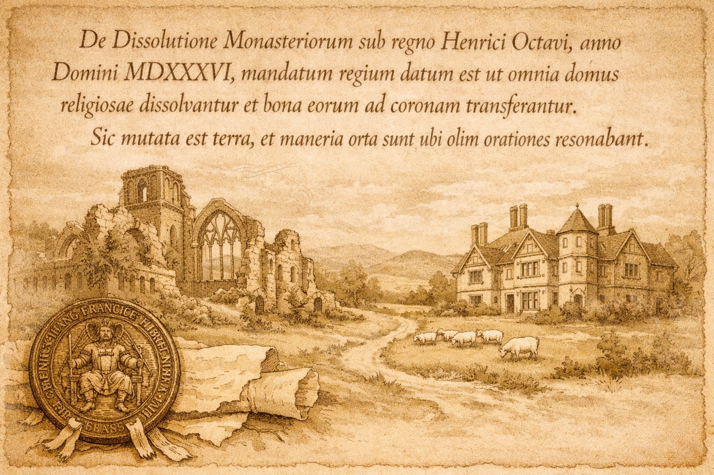

Dissolution of the Monasteries (1536–1541)

The Dissolution of the Monasteries served as the definitive catalyst that transformed the Holt family from local squires into one of the most powerful landholding dynasties in Northern England. By systematically "hollowing out" former church holdings, the family did not merely acquire land, but also the vital capital, tithes, and jurisdictional authority necessary to fuel their expansion for the next 300 years. This immense socio-economic shift allowed the Holts to construct a private empire across Lancashire, controlling a strategic corridor of former monastic estates by 1545 that stretched from the Ribble Valley through Rochdale and into Oldham.
The Insider Advantage: Sir Thomas Holt as Royal CommissionerThe meteoric rise of the Gristlehurst branch was no accident of history. Sir Thomas Holt (d. 1562) served as a Royal Commissioner during the Dissolution. This "insider" status granted him privileged access to monastic valuations and the mechanism of the Court of Augmentations. While many families bought single parcels, Sir Thomas leveraged his position to consolidate entire manors, effectively converting ancient ecclesiastical wealth into a secular Holt inheritance.
Holt Purchasers of Monastic Lands (c. 1537–1545)The following table outlines the systematic acquisition of monastic lands that formed the bedrock of the family’s wealth.
| Cronton Hall and lands Cronton, Staining et. | 1543 | Whalley Abbey | Hall and agricultural demesne | Gristlehurst |
| Manor of Spotland | 1540 | Whalley Abbey | Rents, wood, and coal rights | Gristlehurst |
| Castleton Hall | 1542 | Whalley Abbey | The manor and its dependencies | Stubley |
| Rochdale and Chadderton | 1542 | Whalley Abbey | Messuages and tenant rents | Gristlehurst |
| Steining Grange | 1543 | Whalley Abbey | Agricultural “Grange” & lands | Gristlehurst |
| Clitheroe, Rochdale and Whalley | 1542 | Whalley Abbey | Manors | Stubley |
| Manors of Counscough and Forton | 1543 | Cockersand Abbey | Manors | Gristlehurst |
| Little Mitton | 1543 | Cockersand Abbey | Entire manor and tithes. The Great Hall contained woodwork believed to be salvaged from Whalley Abbey. | Gristlehurst |
Key Estates and Their Significance
Castleton Hall: The Seat of PowerAcquired in 1542 by Robert Holt of Stubley, Castleton was the "Crown Jewel" of the monastic acquisitions. Formerly a possession of Whalley Abbey, the estate comprised over 3,000 acres, including vital water mills and fulling mills. Its acquisition shifted the family’s primary seat from the older, cramped Stubley to the grander Castleton Hall, which remained the chief residence of the Stubley Holts for two centuries.
The Gristlehurst ExpansionThe scale of Sir Thomas Holt’s investment was staggering. Between 1542 and 1543, his known outlays to the Crown totaled £2,369 11s. 8d.—a colossal sum for the era.
- The 1542 Patent: Granted the Manor of Spotland, including Whitworth and Brandwood.
- The 1543 Patent: Included Stidd (Hospitallers), Alt Grange, and various parcels in Forton and Ellel.
The Dissolution did not just change who owned the soil; it changed the nature of power in Lancashire. By capturing the tithes (the right to collect 10% of local produce) and manorial courts, the Holts became the law-givers and tax-collectors for their neighbors. This transition from medieval squires to early-modern "Grandees" was fueled entirely by the collapse of the monastic system.
Major Acquisitions
1542 Grant (Patent 33 Henry VIII, pt. 6)
- Manor of Spotland (Rochdale parish)
- Whitworth, Tong End, Rockliffe, Brandwood
- Rents from Coleshaw (Chadderton)
- Additional parcels formerly of Whalley Abbey and Hospitaller lands
Reserved Rent: £3 11s. 4d. per annum
1543 Grant (Patent 35 Henry VIII, pt. 1)
- Stidd (Hospitallers)
- Alt Grange (Ince Blundell)
- Cronton, Staining (Whalley Abbey)
- Cunscough (Melling), Forton, Ellel (Cockersand Abbey)
Total Known Outlay: £2,369 11s. 8d.
Holts of Stubley / Castleton (Robert Holt of Stubley)
A separate branch with no recorded connection to the Gristlehurst line in these sources.
1542 Grant (Patent 33 Henry VIII, pt. 6, m. 14)
- Entire Castleton estate
- Messuages and lands in Castleton/Hundersfield
- Mill, fulling-mill, Lycott Close
- Whalley Abbey parcels in Whalley, Calcotte, Little Mitton
Tenure: 1/10 knight’s fee + unspecified rents
Robert Holt later resold some parcels (e.g., to John Braddyll), confirming his initial acquisition.
Key Estates and Their Significance
Castleton Hall (The Crown Jewel)
- Acquired: 1542
- Former Owner: Whalley Abbey
- Impact: Became the chief residence of the Stubley Holts for nearly 200 years.
- The hall stands on land directly taken from monastic holdings.